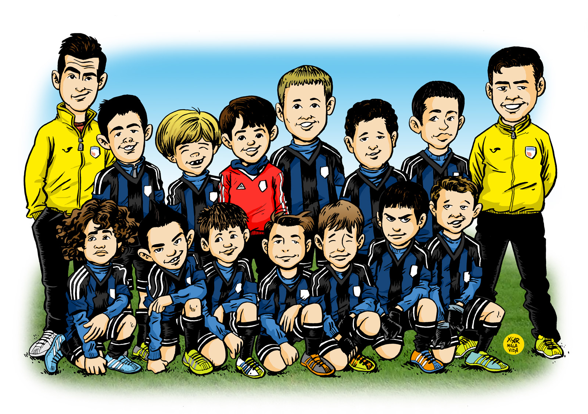

Un equipo de futbol dentro de un partido no solo se limita a los jugadores que estan en cancha, sino existen otros elementos importantes para que en un partido, el equipo sea el ganador, asi mismo, cada jugador posee una funcion importante dentro del equipo.
Las partes de un equipo puede ser definido con el siguiente cuadro explicativo:
| Posicion | Indormacion General | |
|---|---|---|
| Rol | Jugadores | |
| Jugadores | Son aquellos que estan en la cancha jugando y buscando la victoria | Maximo de 11 y minimo de 7 |
| Suplentes | Son otros jugadores que no estan en cancha, pero pueden entrar por alguna circunstancia | Con un maximo de 8 suplentes, 3 pueden ingresar a cancha |
| Cuerpo técnico | Es un grupo de personas quienes toman las decisiones sobre lo que haran los jugadores | Director tecnico, asistente tecnico, preparador fisico, entrenador de arquero |
| Médico | Son los encargados de atender a los jugadores, en el caso de que haya un inconveniente en el partid | Medico y fisioterapeuta |
| Arquero | Es el unico jugador que puede usar sus manos, proteje el arco | Uno en cancha |
| Defensa | Son jugadores que tienen el proposito de impedir que el equipo contrario llegue a atacar el arco | Naturalmente de 3 a 5 en cancha |
| Medio campo | Son jugadores encargados de comunicar la defensa con el ataque | Naturalmente de 2 a 5 en cancha |
| Delantero | Es el principal atacante al equipo contrario, intentando anotar goles al arco rival | Naturalmente de 1 a 4 en cancha |
A continuacion les presentamos los equipos mas famosos
en el mundo
A continuacion les motrare los torneos mas importantes del futbol.